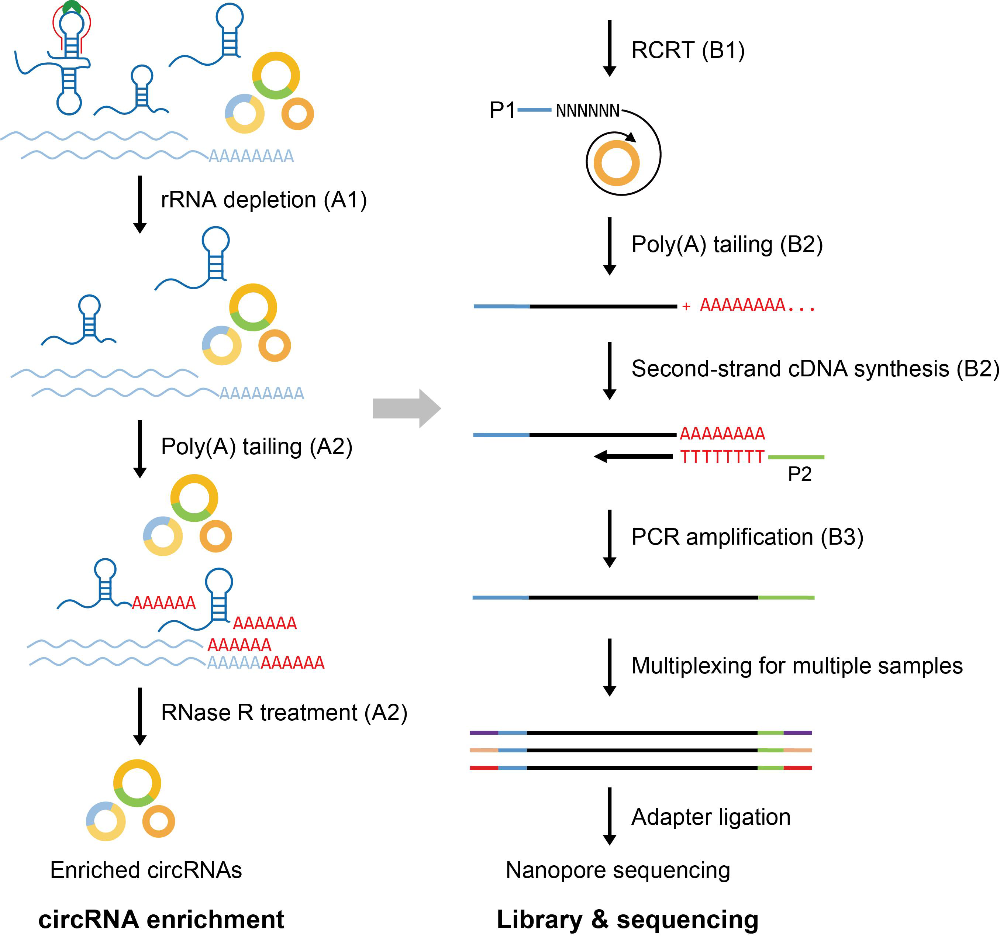

circFL-seq Library Construction¶
Materials and Reagents¶
Ethanol
DNase/RNase-free water
Thermostable RNase H (NEB, catalog number: M0523)
DNase I (NEB, catalog number: M0303S)
ATP (10 mM) (NEB, catalog number: P0756S)
Poly(A) Polymerase (NEB, catalog number: M0276S)
RNA Clean Beads (Vazyme, catalog number: N411-01/02)
RNase R (Lucigen, catalog number: RNR0725)
Equalbit RNA BR Assay Kit (Vazyme, catalog number: EQ212-01)
dATP (NEB, catalog number:N0440S)
ddATP (Jena Bioscience, catalog number: NU-1015S)
HiScript III 1st Strand cDNA Synthesis Kit (Vazyme, catalog number: R312-01/02) or SuperScript IV First-Strand Synthesis System (Invitrogen, catalog number: 18091050)
DNA Clean Beads (Vazyme, catalog number: N412-01/02)
Terminal deoxynucleotidyl transferase (TDT) (Invitrogen, catalog number: EP0161)
I-5 High-Fidelity Master Mix (MCLAB, catalog number: I5HM-200)
Equalbit 1× dsDNA HS Assay Kit (Vazyme, catalog number: EQ121-01)
First-strand synthesisprimer P1-N6: GTCGACGGCGCGCCGGATCCATA(N)6(6 randomized mixed bases)
Second-strand synthesis primer P2-T24: ATATCTCGAGGGCGCGCCGGATCC(T)24(24 consecutive Ts as reverse-complement to polyA)
PCR primers: P1 (GTCGACGGCGCGCCGGATCCATA), P2 (ATATCTCGAGGGCGCGCCGGATCC)
NEBNext FFPE DNA Repair Mix (NEB, catalog number: M6630S)
NEBNext Ultra II End repair/dA-tailing Module (NEB, catalog number: E7546S)
NEB Blunt/TA Ligase Master Mix (NEB, catalog number: M0367S)
NEBNext Quick Ligation Module (NEB, catalog number: E6056S)
Nanopore Ligation Sequencing Kit (ONT, catalog number: SQK-LSK109)
Nanopore Flow Cell (ONT, catalog number: MinION/PromethION R9.4)
rRNA probes mix (see Recipes)
Probe hybridization buffer (see Recipes)
Procedure¶

Note: RNA is easily degradable. Clean all surfaces with 70% ethanol and RNase-away solution, change gloves frequently, and sterilize all materials before use.
A. circRNA enrichment¶
A1. rRNA depletion¶
Mix total RNA, rRNA probes, and probe hybridization buffer to a final volume of 15 uL.
Component |
Volume per sample |
|---|---|
Total RNA |
2.0 µg |
rRNA probes |
1.0 µL |
Probe hybridization buffer |
2.0 µL |
Nuclease-free water |
to 15.0 µL |
Place samples in a thermocycler with heated lid (~105°C). Heat to 95°C for 2 min, slowly cool to 22°C (-0.1°C/s), then incubate at 22°C for 5 min.
Add thermostable RNase H and 10x RNase H buffer for a final volume of 20 µL.
Component |
Volume per sample |
|---|---|
Last-step reaction |
15.0 µL |
Thermostable RNase H |
2.0 µL |
10x RNase H buffer |
2.0 µL |
Nuclease-free water |
1.0 µL |
Incubate at 50°C for 30 min (lid 50°C).
Add DNase I reaction components for a final volume of 30 µL.
Component |
Volume per sample |
|---|---|
Last-step reaction |
20.0 µL |
DNase I |
2.5 µL |
10x DNase I buffer |
3.0 µL |
Nuclease-free water |
4.5 µL |
Incubate at 37°C for 30 min (lid 50°C), then place on ice.
A2. Poly(A) tailing and RNase R treatment¶
Add ATP, 10x Poly(A) Polymerase Reaction Buffer, and Poly(A) Polymerase for poly(A) tailing.
Component |
Volume per sample |
|---|---|
Last-step reaction |
30.0 µL |
ATP (10 mM) |
4.0 µL |
10x Poly(A) Polymerase Reaction Buffer |
4.0 µL |
Poly(A) Polymerase |
1.0 µL |
Nuclease-free water |
1.0 µL |
Incubate at 37°C for 30 min (lid 50°C), then place on ice.
Purify RNA with 2.5x RNA Clean Beads and elute in 8 µL nuclease-free water. Expected yield is ~200 ng RNA.
Remove linear RNA using RNase R.
Component |
Volume per sample |
|---|---|
Last-step reaction |
8.0 µL |
1 U/µL RNase R |
1.0 µL |
10x RNase R buffer |
1.0 µL |
Incubate at 37°C for 30 min, then 70°C for 10 min.
B. Full-length circRNA cDNA preparation¶
B1. Reverse transcription (first-strand cDNA synthesis)¶
Reverse transcribe enriched circRNA in a 20 µL reaction using P1-N6 and HiScript III reverse transcriptase.
Component |
Volume per sample |
|---|---|
Last-step reaction |
10.0 µL |
Nuclease-free water |
5.0 µL |
10x HiScript III Buffer |
2.0 µL |
HiScript III mix |
2.0 µL |
P1-N6 |
1.0 µL |
Thermocycler program: 25°C for 5 min, 50°C for 50 min, 70°C for 2 min, 85°C for 5 s (lid ~105°C).
Purify cDNA using 0.75x DNA Clean Beads.
B2. Poly(A) tailing and second-strand cDNA synthesis¶
Add poly(A) tails at 3’ ends in a 20 µL reaction using TDT. Final concentrations: dATP 2.5 mM and ddATP 25 µM.
Component |
Volume per sample |
|---|---|
Last-step reaction |
14.0 µL |
100 mM dATP |
0.5 µL |
1 mM ddATP |
0.5 µL |
5x TDT Buffer |
4.0 µL |
TDT |
1.0 µL |
Incubate at 37°C for 20 min (lid 50°C), then place on ice.
Purify cDNA using 0.75x DNA Clean Beads.
Synthesize second-strand cDNA with P2-T24 and I-5 High-Fidelity Master Mix.
Component |
Volume per sample |
|---|---|
Last-step reaction |
12.0 µL |
I-5 High-Fidelity Master Mix |
13.0 µL |
10 µM P2-T24 |
1.0 µL |
Note: PCR mix volume may slightly decrease after thorough mixing; total reaction volume remains 25 µL.
Incubate at 98°C for 2 min, 50°C for 2 min, and 72°C for 5 min (lid ~105°C), then place on ice.
B3. Amplification¶
Split cDNA equally into four 50 µL PCR reactions with primers P1 and P2.
Component |
Volume per sample |
|---|---|
Last-step reaction |
25.0 µL |
10 µM P1 |
8.0 µL |
10 µM P2 |
8.0 µL |
I-5 High-Fidelity Master Mix |
92.5 µL |
Nuclease-free water |
76.5 µL |
Note: PCR mix volume may slightly decrease after thorough mixing; total reaction volume remains 200 µL.
PCR cycling: 20 cycles of 98°C for 10 s, 67°C for 15 s, and 72°C for 75 s (lid ~105°C).
Purify with 0.5x DNA Clean Beads and resuspend in 100 µL nuclease-free water.
Perform a second 0.5x DNA Clean Beads purification.
Note: During the second bead selection, longer fragments (~1,000 bp) are preferred to further enrich circRNA cDNA library molecules.
Quantify the DNA library with Qubit.
If total DNA library is <1 µg, use 10-50 ng purified cDNA for additional 6-8 PCR cycles (again in four 50 µL reactions with P1/P2), then purify with 0.5x DNA Clean Beads.
B4. Sample quality check¶
Quantify library concentration using Qubit. For section C, use 0.5-1 µg cDNA library input.
Check fragment distribution with BioAnalyzer. Expected peak is around 1,000 bp; most fragments should range from 600-2,000 bp.
If library quality is low, troubleshoot by checking RNA integrity and bead cleanup efficiency, and confirm effective depletion of rRNA/linear RNA in step A.
C. Nanopore library preparation and sequencing¶
DNA library for barcoding and ligation sequencing can be prepared according to ONT protocols EXP-NBD104 and SQK-LSK109.
Repair and dA-tail 0.5-1 µg circFL-seq cDNA using NEBNext FFPE DNA Repair Mix and NEBNext Ultra II End Repair/dA-Tailing Module, then purify with 1x DNA Clean Beads.
For multiplexing, barcode repaired/end-prepped DNA with Native Barcodes using NEB Blunt/TA Ligase Master Mix, then purify with 1x DNA Clean Beads.
Pool barcoded samples equimolarly. Ligate 700 ng pooled DNA (or single unbarcoded sample) to ONT adapter using NEBNext Quick Ligation Module, then purify with 0.4x DNA Clean Beads and Short Fragment Buffer.
Mix DNA library with sequencing buffer, load onto PromethION or MinION flow cell, and sequence. For downstream analysis, target ~5 million reads (~5 Gb) per sample.